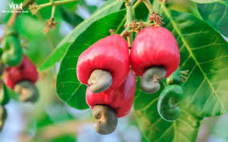

The cashew fruit is a tropical, pear-shaped "cashew apple" (10–15 cm) that turns yellow or red when ripe, featuring a highly perishable, juicy, and astringent pulp. The actual, edible seed (the cashew nut) hangs below the apple in a kidney-shaped, grey shell. Crucially, the shell is toxic and contains a blistering oil, while the apple is widely used for juices, jams, and alcohol.
Home